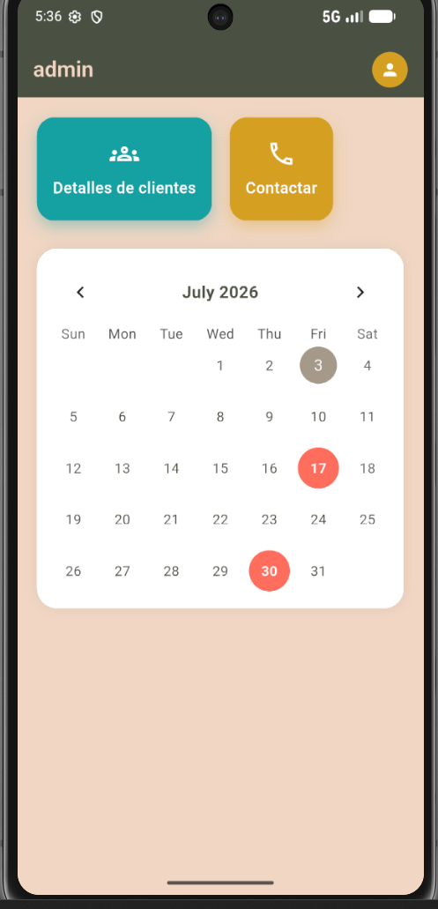

Acerca de mi.
Quien soy?
Hola soy Victor Francisco estudiante de Tecnologías de la Información con un profundo interés en la tecnología y el como esta sirve para facilitar la vida de las personas
Mi interés comenzo con desde que senti curiosidad de como funcionaban las aplicaciones internamente, como era posible que sucedieran tantas cosas en 1 solo dispositivo. Desde ahi comenze a aprender las bases, hasta la actualidad que me encuentro aprendiendo temas cada vez más complejos.
Mi camino
Actualmente me encuentro aprendiendo acerca un buen UX design que contemple a los usuarios. Ademas de algo desarrollo frontend de páginas web. Me gusta que el usuario se sienta comodo con las aplicaciones o páginas que utiliza, por lo que no dudo en contemplar cualquier problema que pueda haber en el diseño.
A futuro
Mi objetivo a futuro planeo especializarme en bases de datos y análisis de datos, ya que mi objetivo no es solo que el usuario pueda ver una interfaz facil de entender y llamativa, si no que tambien pueda acceder a toda la información que necesite de manera fácil y cuando sea necesario.
Habilidades.
Técnicas
- C#
- Java
- HTML5
- CSS3
- Figma
- UX Design
Habilidades blandas
- Adaptación rapida a los problemas
- Trabajo en equipo
- Resolución de problemas
- Velocidad de aprendizaje
- Creatividad
- Empatía y adaptabilidad al usuario
- Pasión por aprender cosas nuevas
Proyectos
Aplicación movil para arrendador de departamentos - En desarrollo
La aplicación consta de una base de datos que permita a los administradores administrar en 1 solo dispositivo y de manera rápida. En el proyecto se hizo uso de la siguiente tecnología:
- Sqlite
- Flutter/Dart
- Figma

Rediseño interfaz gráfica página BBVA
Rediseño de la interfaz de la pagina/aplicacion de BBVA, se realizo con el objetivo de que fuera mas facil de entender, sin opciones ocultas, y agegando una opcion par administracion de dinero, se hizo uso de la siguiente tecnología: